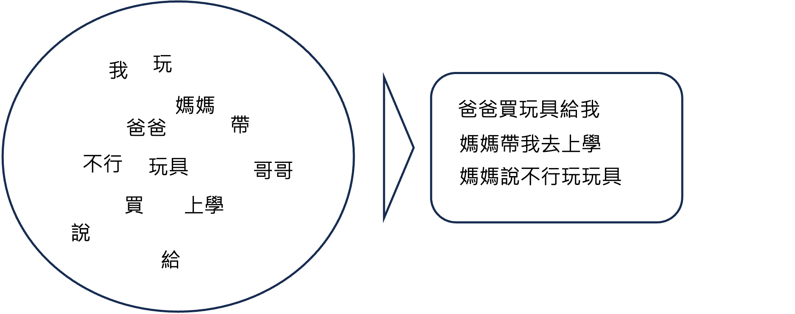
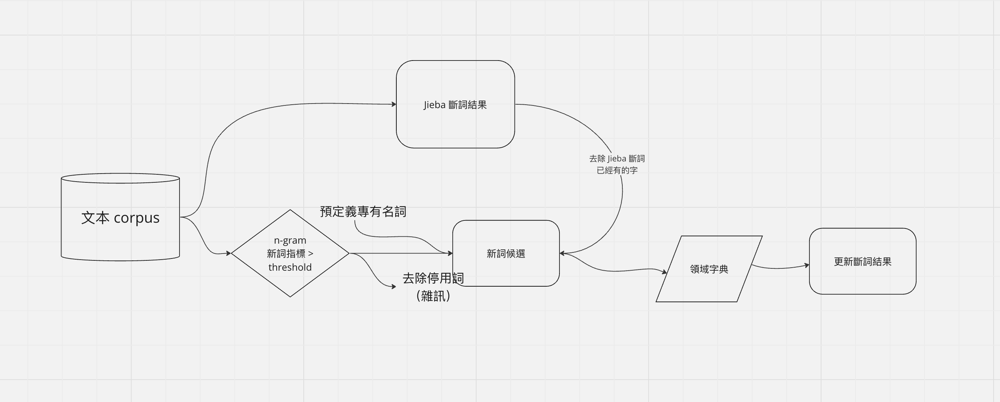

淺談中文斷詞｜中文斷詞的辛酸血淚與新詞偵測
今天想分享關於斷詞的一些辛酸血淚，相信早期從事 NLP 相關任務的人，作法差不多會是斷詞後，再做建模分析等應用，所以都經歷過斷詞不準確帶來的困擾。在傳統的 NLP 任務中，斷詞的品質直接影響後續分析的效果，特別是在中文文本分析中更是如此。因此，雖然斷詞工作看似枯燥且乏味，它卻是 NLP 中極為重要的一環，許多研究和工具都在不斷嘗試改善斷詞的效能。
今天我將分享以下三個要點：
- 常見的斷詞技術與工具
- 斷詞時常遇到的問題
- 新詞偵測的方法
為什麼要做斷詞？如何理解一種語言？
想象一下我們學習語言的過程：我們先學習個別的字詞，再學習如何將它們組合起來形成具有意義的句子。例如，從「爸爸、媽媽、玩具…」到「爸爸給我買了玩具」。
對機器來說也是一樣，我們不會要求機器直接讀懂每句話，而是要將其拆分為更小的單位，例如單字（charactor）、詞（word）再做排列組合。
常見的斷詞方法與套件
斷詞可分為兩大方法：1. Ruled Based 2. Learning Based
- Ruled Based
這種方法依靠預定義的詞典，通過從句子的前端或後端開始匹配來進行斷詞，常見的方法包括正向最大匹配法、逆向最大匹配法和雙向最大匹配法。 - Learning Based
這類方法利用機器學習或深度學習模型，通過訓練數據讓模型學會如何進行斷詞。例如，隱藏式馬可夫模型（HMM）和基於transformer的模型。這些模型通常使用BIES標記法，來標識一個字在詞中的位置，分別代表該字為一個詞的開始（begging）、中間（intermediate）、結尾（end）或是本單單一組成一詞（singls-character）。
例如：「爸爸買玩具給我」可以斷詞為：「爸爸/買/玩具/給/我」，則標記結果為「爸（B）爸（E）買（S）玩（B）具（E）給（S）我（S）」BESBESS。
而 HMM 或是 Transformer 的模型細節則不在此展開，之後有機會再分享。
而常見的 Jieba 則是利用 Ruled based 做第一階段的斷詞，再以 HMM 的方式進一步斷詞語新詞偵測。
其他常見的斷詞工具還有
- MONPA
- ckip tagger
- ckip_transformer
- Articut
斷詞的痛？斷詞怎麼斷不好
中文的結構使得斷詞尤為困難，因為詞與詞之間沒有明顯的界限，這導致以下問題：
歧義
同一句話可能有多種不同的斷詞方式，這包括組合型歧義（不同斷詞方式對意義影響不大）和真歧義（不同斷詞方式意義完全不同）。- 組合型歧義
切法不同並沒有導致意義上多大的我、在、國泰、產險、數據、科技、發展部、打工 vs
我、在、國泰產險、數據科技發展部、打工
差別在於當情境是跟全台灣金融業打工仔比較時，上面的斷詞結果或許較有代表性，
但當我今天是在分析國泰內部的相關文字資料時，下面的斷詞結果可能會更符合情境。- 真歧義
切法不同，語意會完全不同。我、買了、一份、超值、保險、套餐 vs
我、買了、一份、超值、保險套、餐
- 組合型歧義
未知詞 OOV
現有工具中，訓練用的文本資料通常是新聞、書籍、演講等，導致：- 人名
- 年代久遠 ↔ 趨勢新詞
- 書面正式用語 ↔ 對話、論壇
- 領域遷移 jieba 人民日報 ↔ ckip 中央社CNA
直接在特殊領域上應用通常會有很大的 performance drop
例如醫療、金融、法律、鄉民等等，而中國與台灣在用語上的差異也會導致繁體中文的斷詞效度較低
以 jieba 斷詞為例，我爬取了一些新聞文章，嘗試斷詞，而 jieba 對於一些論壇用語、專有名詞無法判別其應為一個字詞：美式、賣場、好式、多、的、販售、品項、豐富
年底、九、合一、大選、逐漸、逼近
你、個、活網、仔
我、今天、宵夜、要、吃、涼、麵、配、三合、一味、增湯
斷詞斷不好怎麼辦！
換個模型吧
雖然這聽起來可能像是無用的建議，實際上換一個模型有時候真的可以解決問題，而且性價比很高。我們需要考慮的關鍵問題是：這個模型的訓練資料與我們的分析目標資料之間的分佈是否相似？在不同的領域，即便使用相同的語言，詞彙出現的模式也可能完全不同。因此，找到一個更適合當前數據的模型，或者用自己的數據來訓練模型，是解決斷詞問題的有效策略之一。比如，使用 jieba 斷詞系統未能正確處理的文本，改用 ckip_transformer 模型後，可以看到斷詞質量有了明顯的提升。美式、賣場、好式多、的、販售、品項、豐富
年底、九合一、大選、逐漸、逼近
你、個、活網仔
我、今天、宵夜、要、吃、涼麵、配、三合一、味增湯新增辭典字詞
上網尋找領域字典，或請專家羅列常用字詞，針對特定領域的專業術語進行字典的擴充。這種方法尤其適用於專業領域，例如醫學、法律或科技等，這些領域經常會有大量的專業術語和新詞。透過新增這些專業字詞到斷詞工具的字典中，可以顯著提升斷詞的準確性和相關文本分析的質量。例如，對於金融領域，可以新增如「量化緩和」、「加密貨幣」等新興術語，這樣的做法能幫助模型更好地理解和處理專業文本。新詞指標
在一些學術文獻和網絡資源中，我們可以找到多種偵測新詞的方法。這些方法通常利用一些統計指標來判斷一個詞是否應被視為新詞，當這些詞的表現超過特定的閾值時，就可以被認定為新詞。主要的偵測新詞指標包括：- 詞頻
這是通過計算一個詞（如n-gram）在文本中出現的次數來進行評估。例如，如果「皮卡丘」的出現次數超過某個預設的閾值，則可能將其認定為新詞。 - 凝結度
這個指標評估若干個字組成的詞出現在一起的概率是否高於這些字分開出現的概率。例如，如果「皮卡丘」作為一個整體出現的概率大於「皮」和「卡丘」各自出現的概率之乘積，則認為「皮卡丘」具有高凝結度。 - 自由度
這個指標考量一個詞在文本中的使用自由度，也就是該詞左右鄰近字的變化程度。舉例來說，在句子「小智收服了皮卡丘，但是皮卡丘就是不願意住進寶貝球裡」中，「皮卡丘」周圍的字（如「了」和「是」在左邊，「，」和「就」在右邊）表現出高度的變化，這表明「皮卡丘」在文本中的使用具有高自由度，支持將其視為一個獨立的詞。
- 詞頻
我們可以透過上述組合上述指標，設定閥值判斷新詞，流程大致上如下圖：

當篩選出符合閥值的新詞後，透過 1. 新增專有名詞 2. 去除停用詞（雜緒）3. 去除 jieba 本就可以分出的詞，我們可以得到一個新詞字典，再進行斷詞結果的更新。
實作上面流程，的確可以分出 Jieba 無法擷取的詞：
好市多、狗狗、詹姆斯、分科測驗、繁星推薦、高股息、熱身賽
但實際上還是會有許多的雜訊，例如：
的事情、的投資、的東西、的球員，
優化幅度不大，少不了人工調整指標參數與去除雜訊的工，目前無法如想像中的自動化。
心得與回顧
本文介紹了三點：
- 斷詞技術與工具，包含 BIES 標記法、HMM 等，以及常見套件有 jieba、ckip、ckip_transformer、Articut 等。
- 斷詞常見的痛有：1. 切法不一（歧義）2. 未知詞問題
- 斷詞斷不好怎麼辦：1. 換個工具說不定海闊天空 2. 新增領域專有名詞 3. 凝結度 x 自由度
斷詞的坑很深，尤其在新詞偵測的部分，很難有一種方法是真的夠好，
更常是結合上述所有作法，並參雜不少的人工成本進行梳理、降噪。
參考資料
互联网时代的社会语言学：基于SNS的文本数据挖掘
《自然語言處理》新詞偵測. 5p | by JimmyWu
線上讀書會 - 文立 主講 中文斷詞-結巴